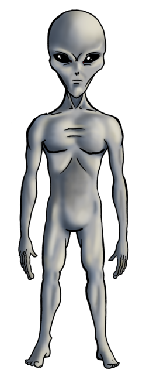
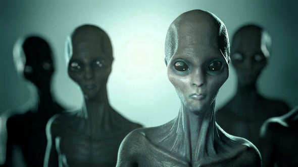
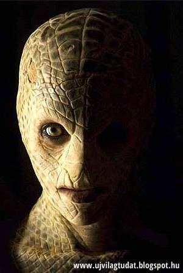
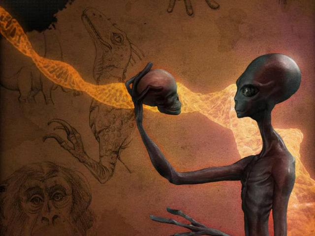
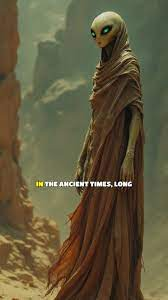

A katonai-ipari-földönkívüli komplexummal együttműködő fajok
| Név | tudnivalók | Kép |
|---|---|---|
| szürkék (más néven zéták vagy retikuliánusok) | A szürkéket általánosan alacsony (100–150 cm), vékony humanoidokként írják le, négy ujjuk van (hüvelykujjuk nincsen), abnormálisan nagy fejjel (villanykörtéhez hasonló formájú), óriási fekete mandula alakú szemekkel és sima, szőrtelen, szürke bőrrel (innen a név is, de elméletileg ,,kis fehéreknek" kéne hívnunk őket). |  |
| Magas szürkék/fehérek | A szóban forgó csoport második prominens földönkívüli képviselője a Robert Dean által leírt magas szürkék. Őt idézve: „Igen nagy csoport. Amikor azt mondom nagy, elsősorban a magasságukat értem ez alatt. 180-240 centiméteresek, de előfordul közöttük a 270 centiméteres magasság is. Emberszerűek, de nagyon halvány a bőrük, szinte teljesen fehér, a testük teljesen szőrtelen.” |  |
| Gyíkemberek (Reptilianidák) | A csoport következő prominens képviselője a Dean által humanoid fajként bemutatott, hűllőszerű karakterekkel rendelkező, 180-210 cm magas gyíkemberek (reptilians). A gyíkemberek fajának leírásakor egyaránt szóba kerül a földi és más csillagrendszerek is, mint földönkívüli eredet. |  |
| Szíriusziak - a Szíriusz B-ről | A fentebb említett földönkívüli fajok mellett számos, emberszerű idegen látogat hozzánk a Szíriusz B csillagrendszerből, melyeket Alex Collier a következőképpen mutat be: „A Szíriusz B kultúráinak igen sajátos rezgése van. Az emberek közül egyesek vörösek, mások bézs színűek, megint mások fekete-bőrűek. A Szíriusz B körül keringő bolygók rendkívül szárazak, s általában valamely gyík- vagy kétéltű jellegű faj megszállása alatt állnak. |  |
| Annunakik | Végül, beszámolók jelentek meg hatalmas emberszerű lényekről, akik fontos szerepet játszottak a Föld emberekkel való benépesítésében, és szabályos időközönként visszatérnek a Földre, hogy megtapasztalják, az emberiség milyen hatékonysággal használja fel szülőbolygója erőforrásait, és hogy a földönkívüli fajok milyen szerepet játszanak az emberiség „menedzselésében”. |  |